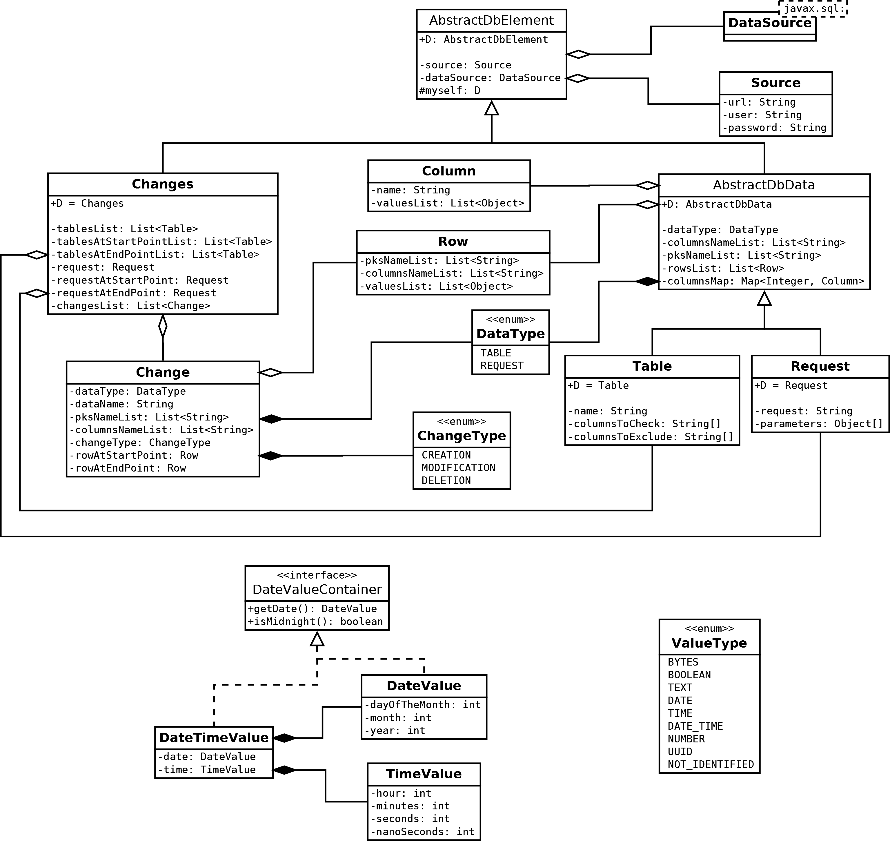

See: Description
| Interface | Description |
|---|---|
| DateValueContainer |
This interface indicates container of
DateValue. |
| DbElement |
Element in a database.
|
| Class | Description |
|---|---|
| AbstractDbData<D extends AbstractDbData<D>> | |
| AbstractDbElement<D extends AbstractDbElement<D>> |
This class represents element from the database (either a
AbstractDbData or a Change). |
| Change |
Change in the database.
|
| Changes |
Changes in the database.
|
| Column |
Column in a
AbstractDbData. |
| DataSourceWithLetterCase |
A data source to connect to the database with letter case.
|
| DateTimeValue |
This class represents a date/time value in the database.
|
| DateValue |
This class represents a date value in the database.
|
| Request |
A request in the database to get values.
|
| Row |
Row in a
AbstractDbData. |
| Source |
A source to indicates the informations to connect to the database.
|
| SourceWithLetterCase |
A source to indicates the informations to connect to the database with letter case.
|
| Table |
A table in the database to read to get the values.
|
| TimeValue |
This class represents a time value in the database.
|
| Value |
| Enum | Description |
|---|---|
| ChangeType |
Enumeration of the different types of change that are possible in the database (creation, modification or deletion of a row).
|
| DataType |
Enumeration of the different type of data.
|
| ValueType |
Enumeration of the different type of value that are in the database.
|
This diagram shows these different types :

Copyright © 2015–2016 AssertJ. All rights reserved.